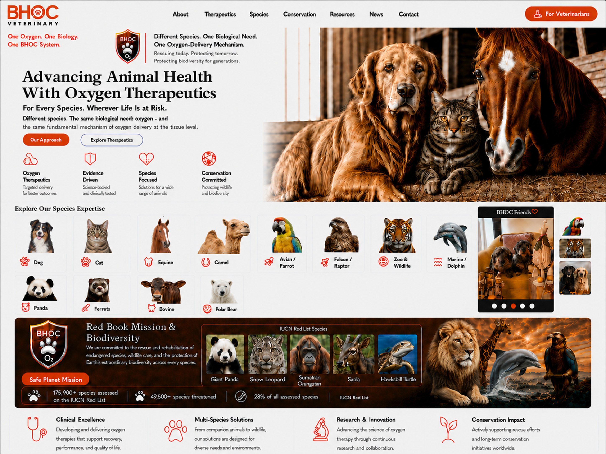

BHOC Veterinary - Advancing Animal Health With Oxygen Therapeutics
One Oxygen. One Biology. One BHOC System.
For Every Species. Wherever Life Is at Risk.
Different species. The same biological need: oxygen - and the same fundamental mechanism of oxygen delivery at the tissue level.


Different Species. One Biological Need. One Oxygen-Delivery Mechanism.
Rescuing today. Protecting tomorrow. Preserving biodiversity for generations.
Our Approach
Oxygen therapeutics, evidence-driven development, species-focused solutions and conservation commitment.
Veterinary Oxygen Therapeutics
BHOC Veterinary is developing evidence-driven oxygen-delivery science for companion, equine, avian, wildlife, marine and exotic animal health. BHOC is not a blood replacement.
Species Expertise
Dog, cat, wire-haired Dachshund, equine, camel, camelid, panda, ferrets, bovine, pig, avian, falcon and raptor, zoo and wildlife, marine and dolphin, and exotic animals.
Safe Planet Mission - Red Book Mission & Biodiversity
Protect Life. Preserve Species. From Nature. Through Science. Back to Nature. More than 49,500 species are threatened with extinction. 28% of all assessed species. IUCN Red List.
News
BHOC Veterinary research, animal health and conservation updates.